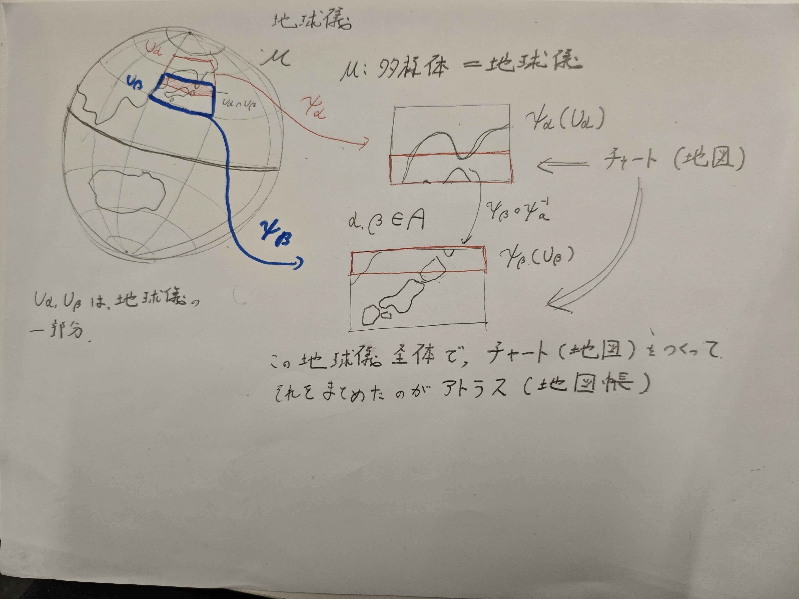
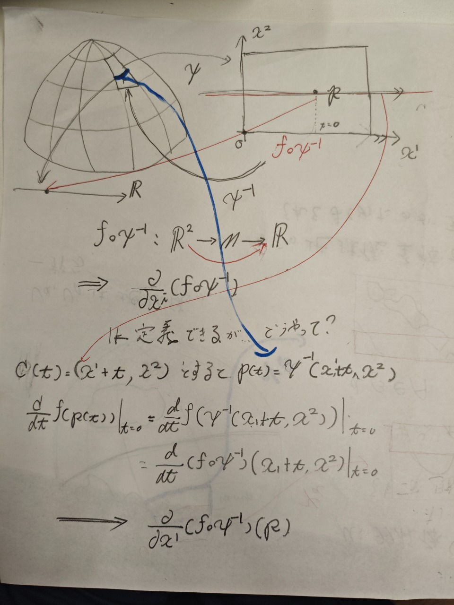
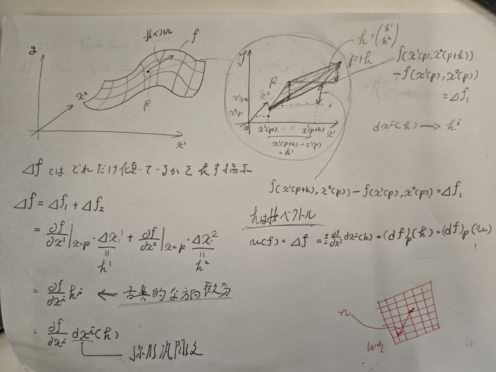

多様体と接空間
はじめに
さて，多様体の定義を書くが，私は数学科ではないので，この定義をほとんんど理解していない．というか理解する必要あるのだろうか．いちおうイメージでは理解はしているつもりだし，教科書もこれを丸暗記することはないというかそんな感じのことを言っているので，数学的に正しい定義よりも，イメージで覚えて行くほうが私にとっては大事なのかなと認識している． あと接ベクトルの抽象的な定義が出てくるが，これは初めて学ぶ人にとってみれば奇妙な考えだと思うので，疑問に思ったらAIと徹底的に議論したり教科書をじっくり読むなどすれば良いと思う．あとここからアインシュタイン縮約記法を使っていく．
多様体の数学的な定義
集合Mが以下の条件を満たすとき，Mをn次元C^{r} 級可微分多様体と言う．
- Mは可算基を持つHausdorff空間
- 適当な集合Aを添え字集合とするMの開集合の族\{ U_{\alpha} , \alpha \in A\}と写像 \psi_{\alpha} : U_{\alpha} \rightarrow \mathbb R^nの族 \{ \psi_{\alpha} \}があって，以下の三条件を満たす \begin{align*} & 1. M = \bigcup_{\alpha \in A} U_{\alpha} \\ & 2.\psi_{\alpha} : U_{\alpha} \rightarrow \psi_{\alpha}(U_{\alpha}) \text{ は全単射で，} \psi_{\alpha} \text{ も } \psi_{\alpha}^{-1} \text{ も連続写像} \\ &3. U_{\alpha} \cap U_{\beta} \neq \emptyset \text{ ならば写像 } \psi_{\beta} \circ \psi_{\alpha}^{-1} : \psi_{\alpha}(U_{\alpha} \cap U_{\beta} ) \rightarrow \psi_{\beta}(U_{\alpha} \cap U_{\beta})はC^{r}級 \end{align*}
図での説明

1の条件について
この定義は，病的な対象を排除するための要請であるので，説明を割愛する．
2の条件について
まずここに登場するペア(U_{\alpha} , \psi_{\alpha})を座標近傍またはチャート（地図）という．その全体\{ (U_{\alpha} , \psi_{\alpha}), \alpha \in A \}のことをアトラス（地図帳）という．また各写像\psi_{\alpha}を局所座標系とよび，2-3に登場する写像 \psi_{\beta} \circ \psi_{\alpha}^{-1}を座標変換という． 重要な点は，地球儀と，地図帳は一対一対応しているという点である． 地球儀の一部と地図を変換する関数が\psiである． ここで，チャートの空間は\mathbb R^nである．
多様体上の微分積分
多様体M上で定義された関数f : M \rightarrow \mathbb R がC^r級とはMの任意の座標近傍(U_{\alpha},\psi _{\alpha})に対し， f \circ \psi^{-1}_{\alpha} : \psi_{\alpha} (U_{\alpha}) \rightarrow \mathbb RがC^r級であることとする. n次元多様体Mとk次元多様体Nへの写像f : M \rightarrow NがC^r級であるとは， M,Nのアトラスをそれぞれ\{ (U_{\alpha},\psi_{\alpha}) \},\{ (W_{\beta},\phi_{\beta}) \}とするとき， f(U_{\alpha}) \cap W_{\beta} \neq \emptysetなる全ての\alpha,\betaについて \phi_{\beta} \circ f \circ \psi^{-1}_{\alpha} : \psi_{\alpha}(U_{\alpha}) \rightarrow \phi_{\beta}(W_{\beta})がC^r級であることと定義する． だが，いちいちこう書くのはめんどくさいので，単にfと書く．
接ベクトル
多様体上で接ベクトルを考えることは簡単なことではない．接ベクトルとは，空間のある一点に接しているベクトルの集合だが，これは外側の世界を考えている．これではいけない．多様体の中で閉じた形で記述したい． どうするのが良いのか．いったん幾何学的イメージを捨てて，接ベクトルが満たすべき抽象的な性質を定義として採用する．
接ベクトルの定義(抽象的に)
多様体M上の点pにおける接ベクトルvとは各f \in C^{\infty}(M)に対し，実数v(f) を対応させる写像であって，次の性質を満たす
- 線型性
- Leibniz則 v(fg) = v(f)g(p) + f(p)v(g) ではこの定義の背景には，接ベクトルとは，曲線に沿った方向微分のことであるという着想がある．p \in Mを通るM上のなめらかな曲線C = {p(t) ; p(0) = p}を考える．さらにM上のなめらかな関数fが任意に指定されたとすると，曲線Cと関数fを合成することにより，C上の一変数関数が定まり，したがってこの関数のt = 0での変化率 \left. v(f) = \frac{d}{dt} f(p(t)) \right|_{t=0} も定まる．
上の議論の疑問
さて，疑問としてなぜ急に曲線を考えるのかという話になってくる．それは多様体の微分を一変数微分に落とし込みたいという動機から生まれる． まず，多様体の微分を素直に書くと（次の式は定義できない） \lim_{h \rightarrow 0} \frac{f(p + h) - f(p)}{h} となるが，これはp + hが定義できないので，この式は意味をなさない． ここでp(t)という曲線を定義する，まずp(t)は\mathbb R \rightarrow Mである．次にfは多様体上の点を実数に写す関数である．すなわちf : M \rightarrow \mathbb R．ここで合成関数f \circ pの写像を考えると\mathbb R \rightarrow \mathbb Rとなるので，これは一変数関数である なので微分の定義を用いて微分を定義できる. \left. \frac{d}{dt} f(p(t)) \right|_{t=0} = \lim_{h \to 0} \frac{f(p(h)) - f(p(0))}{h}
pもfもどちらもMの中で定義している．なのでこれはMで完結している接ベクトルの定義となる．
接空間
接ベクトルを理解できたら，接空間の定義は理解できるはずである
定義
p \in Mにおける接ベクトル全体の集合をT_pMと書くことにする．u,v \in T_pM とa,b \in \mathbb Rに対し，au + bvを (au + bv)(f) = a u(f) + b v(f) と定義すれば，これも p \in Mにおける接ベクトルである．なのでT_pMは\mathbb R上の線形空間となる．これをp \in Mにおける接空間という． 前回の線形汎関数と双対空間の関係を考えると．fは線形汎関数でありT_pMはfがなす空間の双対空間(f \in T^*_pM)であるとわかる．
T_pMの基底
線形空間を考えたら，基底を考えたくなる．多様体Mはn次元であるとして，pの周りで局所座標系(x^1,x^2 ,...,x^n)を一つ固定すると，写像 \left( \frac{\partial } {\partial x^i} \right)_p : f \rightarrow \frac{\partial f} {\partial x^i}(p)
が定まる． これはおかしいのでは，なぜならf: M \rightarrow \mathbb Rなので，微分が定義できないのでは？先程のtなら理解できるが． この疑問を解決しよう．

ここでは省略されているものがある．それは関数\psiである．省略せずに書くと， \left( \frac{\partial } {\partial x^i} \right)_p : f \rightarrow \frac{\partial (f \circ \psi^{-1})} {\partial x^i}(\psi (p)) これで，次元としては偏微分を定義できるようになったが，具体的にどう定義してあげればよいか，それは先程使ったtを用いることで解決できる．画像にあるようにc(t) = (x^1 + t, x^2)と，局所座標系で定義する．ここで p(t) = \psi ^{-1}(x^1 + t , x^2)となることがわかる．fを合成すればtでの微分を定義できるので \left. \frac {d}{dt} f(p(t))\right |_{t=0} = \left.\frac{d } {dt}(f \circ \psi^{-1})(c(t)) \right |_{t=0} = \left. \frac{d } {dt}(f \circ \psi^{-1})(x^1 + t, x^2) \right|_{t=0} となる．ここでこの微分はx^1の方向しかしていない．すなわちこの微分はx^1についての偏微分であると定義できる．すなわちここで偏微分を $$ ( {x^i} )p = . {dt}(f {-1})(x1 + t, x^2) |{t=0}$$ と定義する．(厳密な定義はn次元でするべきであるが) 教科書は(f \circ \psi^{-1})をfと省略していることがわかる． この偏微分の組がT_pMの基底となることを示していく．
定理 \left \{ \left( \frac{\partial}{\partial x^i} \right) \right \}^n_{i=1} \text{は} T_pM \text{の一つの基底である}
これを確認していく． まずこれが一次独立であることを示す． すなわち a^i \left(\frac{\partial}{\partial x^i}\right)_p = 0 ですべてのa^iが0になることを示せば良い． a^i \frac {\partial f}{\partial x^i} (p) = 0 が任意関数f \in C^{\infty}(M)で成立すれば良い． 任意関数でこの式が成立するときに，a^i =0であることを示せば良いので， ここでfとしてx^jをとれば（x^jは部分空間Uで定義されているが，Uの周りだけ値をとるような関数にすればMでも定義できるのでよい） 0 = a^i \frac {\partial x^j}{\partial x^i} (p) = a^i \delta^j_i = a^j
で，jは任意だから一次独立性が示された． 次に，任意の接ベクトルv \in T_pMが\left \{ \left( \frac{\partial}{\partial x^i} \right) \right \}^n_{i=1}の一次結合で書けることを示したい．まず多様体上に定義される定数関数c : M \rightarrow \mathbb R, c(p) = cについてv(c) = 0であることを示す．トリックとしてc = c \times 1であることを用いる． v(c) = cv(1)である．ここで1 = 1 \times 1より Leibniz則を用いて v(1) = 2v(1)となることとがわかる．よってv(1) = 0であり．そこからv(c) = 0であることが分かる．
(ここまでで分かることだが，教科書はfとf \circ \psi^{-1}を同一視している．なのでここでも教科書に習ってこれらを同一視するが，入力がp \in Mならばfそのままだし，対して入力がx \in \psi_{\alpha}(U_{\alpha})などであれば，f \circ \psi^{-1}_{\alpha}(x)と考えれば良い)
関数fを任意に固定して，点pの局所座標をx_0 = (x_0^1 , ..., x_0^n)とすれば，Tayorの定理よりpの近傍で，
f(x) = f(x_0) + \frac{\partial f}{\partial x^i} (x_0)(x^i - x^i_0) + G_{ij}(x)(x^i - x^i_0)(x^j - x^j_0)
が成立する．ここでG_{ij}(x)はpの近傍で定義されたなだらかな関数である．
ここでvを作用させる．
v(f(x)) = v(f(x_0)) + \frac{\partial f}{\partial x^i} (x_0)v(x^i - x^i_0) + v(G_{ij}(x)(x^i - x^i_0)(x^j - x^j_0))
右辺第一項は0となる，第三項について考える， vは点pの接ベクトルなので，全体で作用を行えば，それはpについて考えることとなる．簡単に言い換えるなら (fg)'(x_0) = f'(x_0)g(x_0) + f(x_0)g'(x_0) と，微分されていない部分もx_0が代入されている．vとはこのpへの代入が隠れている． 第三項を具体的に計算してみると \left[ v(G_{ij})(x^i - x^i_0)(x^j - x^j_0) + G_{ij}v(x^i - x^i_0)(x^j - x^j_0) G_{ij}(x^i - x^i_0)v(x^j - x^j_0) \right]_{x = x_0 } = 0 となるので，線形性とv(x^i_0) = 0を用いれば
v(f) = \left( v(x^i) \frac{\partial}{\partial x^i} \right)_p(f)
であることが分かるので定理は示された． なので偏微分がT_pMの基底の一つになることが分かる．
双対空間T^*_pM
さて，T_pMの双対空間について考える．T^*_pMは余接空間と呼ばれる． 余接空間の基底は何だろうか．次の概念を導入する．
微分
f \in C^{\infty}(M) が任意に与えられたとき
(df)_p (v) = v(f) で定まる線形汎関数(df)_p : T_pM \rightarrow \mathbb Rをpにおけるfの微分という．

さて，はっきり言って謎である．なぜこれが急に微分としていいのか全くわからない．いったん抽象度を落として考えてみる． 平坦な2次元の座標空間 \mathbb{R}^2 において，関数 f の変化を考える． 点 p の座標を x^1(p) と x^2(p) とする．ここから位置を少し動かした点 p+h を考え，このときのズレを表すベクトルを h = \begin{pmatrix} h^1 \\ h^2 \end{pmatrix} とする．
座標軸に沿ったそれぞれの増分 \Delta x^1, \Delta x^2 は，図のように座標関数の差として表される． \Delta x^1 = x^1(p+h) - x^1(p) = h^1 \Delta x^2 = x^2(p+h) - x^2(p) = h^2
このとき，関数 f の値の変化量 \Delta f は次のようになる． \Delta f = f(x^1(p+h), x^2(p+h)) - f(x^1(p), x^2(p))
これをそれぞれの軸方向への部分的な変化 \Delta f_1, \Delta f_2 に分解して1次近似する． \begin{align*} \Delta f &= \Delta f_1 + \Delta f_2 \\ &\approx \left. \frac{\partial f}{\partial x^1} \right|_{x=p} \cdot \Delta x^1 + \left. \frac{\partial f}{\partial x^2} \right|_{x=p} \cdot \Delta x^2 \\ &= \left. \frac{\partial f}{\partial x^1} \right|_{x=p} \cdot h^1 + \left. \frac{\partial f}{\partial x^2} \right|_{x=p} \cdot h^2 \end{align*} これは古典的な方向微分に相当する．
ここで，この式の h^1, h^2 という部分に注目する．入力されたベクトル h から i 番目の成分 h^i を取り出す線形汎関数を dx^i と定義する．すなわち， dx^i(h) = h^i である．この写像 dx^i を使うと，先ほどの近似式は次のように書き直せる． \Delta f \approx \left. \frac{\partial f}{\partial x^1} \right|_{x=p} dx^1(h) + \left. \frac{\partial f}{\partial x^2} \right|_{x=p} dx^2(h)
この右辺をベクトル h を入力して変化量 \Delta f を出力する線形汎関数とみなし，これを (df)_p(h) と書く． (df)_p(h) = \left. \frac{\partial f}{\partial x^1} \right|_{x=p} dx^1(h) + \left. \frac{\partial f}{\partial x^2} \right|_{x=p} dx^2(h)
この議論を多様体 M の上へと拡張する． 多様体の上では，点 p と p+h を直接結ぶ平らなズレを定義することはできない．しかし，点 p における微小なズレは，接空間 T_pM の上の接ベクトル v として厳密に定義できる．
したがって，古典的なズレのベクトル h を多様体上の接ベクトル v に置き換える．また，古典的な方向微分の値 \Delta f を，接ベクトル v が関数 f に作用した結果である v(f) に置き換える．
すると，古典的な関係式 (df)_p(h) = \Delta f は，多様体の上で次のように表現される． (df)_p(v) = v(f) これが，多様体における微分の定義である．全微分にベクトルを代入すると方向微分が得られるという，古典的な微積分の原則を多様体の上で表現したものである．
この定義をもとに，余接空間 T^*_pM の基底について考える． 任意の関数 f の微分 (df)_p について，入力するベクトルを v とすれば，次のように書ける． (df)_p(v) = \sum_{i=1}^n \left. \frac{\partial f}{\partial x^i} \right|_p dx^i(v)
両辺から入力の v を取り外すと，写像としての等式が得られる． (df)_p = \sum_{i=1}^n \left. \frac{\partial f}{\partial x^i} \right|_p (dx^i)_p この式は，任意の関数 f の微分 (df)_p が，線形汎関数の組 (dx^1)_p, \dots, (dx^n)_p の線形結合として表されることを示している．
接空間 T_pM の標準的な基底に対して (dx^i)_p を作用させると， (dx^i)_p \left( \left. \frac{\partial}{\partial x^j} \right|_p \right) = \delta^i_j となり，(dx^1)_p, \dots, (dx^n)_p は接空間の基底の双対基底をなしていることがわかる．
したがって，余接空間 T^*_pM の基底は， (dx^1)_p, (dx^2)_p, \dots, (dx^n)_p となる．
まとめ
- 多様体は地図と地球儀と地図帳で考えると良い
- 接ベクトルを内的に定義できることが重要
- 微分は接ベクトルから定義できる
お気持ち表明
めちゃくちゃ詰まりました．特に接ベクトルと微分の関係をイメージするのに時間がかなりかかってしまって丸１日かかりました．ここでこんなに詰まって大丈夫なのだろうか．．．と思いつつ勉強は続けていこうと思います．がんばります．